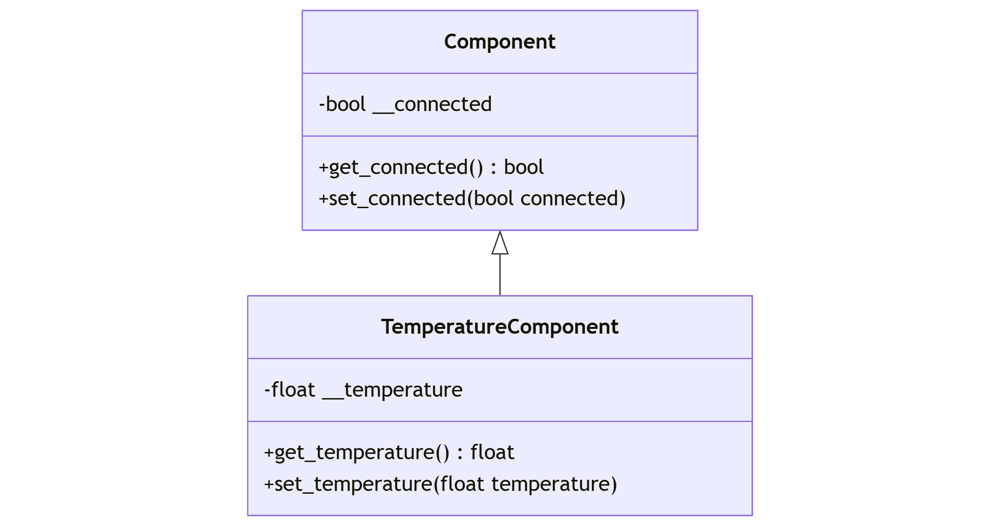

Klassenbeziehungen
Assoziation
Eine Assoziation beschreibt eine Verbindung zwischen zwei Objekten unterschiedlicher Klassen. Diese Beziehung impliziert keine Ownership, sondern lediglich eine Verknüpfung, die das Interagieren von Objekten ermöglicht.
Im folgenden Beispiel hat der MemController Zugriff auf ein oder kein Component-Objekt. Die Methode set_connected
im MemController sorgt dafür, dass dieser mit dem Component-Objekt kommuniziert.
classDiagram
MemController <-- Component
class Component {
-bool __connected
+get_connected() bool
+set_connected(bool connected)
}
class MemController {
-Optional~Component~ __component
+set_component(Optional~Component~ component)
+set_connected(bool connected)
}Beispiel in Python:
from typing import Optional
class Component:
__connected: bool
def __init__(self) -> None:
self.__connected = False
def get_connected(self) -> bool:
return self.__connected
def set_connected(self, connected: bool) -> None:
self.__connected = connected
class MemController:
__component: Optional[Component]
def __init__(self) -> None:
self.__component = None
def set_component(self, component: Optional[Component]) -> None:
self.__component = component
def set_connected(self, connected: bool) -> None:
if self.__component is not None:
self.__component.set_connected(connected)
In diesem Fall kann der MemController über die Methode set_component eine Referenz zu einem Component-Objekt
setzen oder löschen. Die Methode set_connected ermöglicht die Steuerung der Verbindung des Component-Objekts.
Aggregation
Eine Aggregation stellt eine "Teil-Ganzes"-Beziehung dar, bei der ein Objekt eine Sammlung von Objekten einer anderen Klasse verwaltet. Im Gegensatz zur Komposition existieren die enthaltenen Objekte unabhängig von der aggregierenden Klasse.
Im folgenden Beispiel kann ein MemController-Objekt mehrere Component-Objekte verwalten und deren Verbindungsstatus
steuern.
classDiagram
MemController o-- Component
class Component {
-bool __connected
+get_connected() bool
+set_connected(bool connected)
}
class MemController {
-List~Component~ __components
+add_component(Component component)
+set_connected(bool connected)
}Beispiel in Python:
from typing import List
class Component:
__connected: bool
def __init__(self) -> None:
self.__connected = False
def get_connected(self) -> bool:
return self.__connected
def set_connected(self, connected: bool) -> None:
self.__connected = connected
class MemController:
__components: List[Component]
def __init__(self) -> None:
self.__components = []
def add_component(self, component: Component) -> None:
self.__components.append(component)
def set_connected(self, connected: bool) -> None:
for component in self.__components:
component.set_connected(connected)
Hier wird dem MemController-Objekt ermöglicht, eine Liste von Component-Objekten zu verwalten. Die Methode set_connected wird auf jedes Component-Objekt angewendet, das dem MemController hinzugefügt wurde.
Komposition
Eine Komposition stellt eine starke "Teil-Ganzes"-Beziehung dar, bei der die Existenz eines Objekts ohne das andere nicht möglich ist. Im Gegensatz zur Aggregation kann das enthaltene Objekt nicht unabhängig existieren.
Im folgenden Beispiel hat der MemController ein Component-Objekt, dessen Lebenszyklus direkt vom MemController abhängt.
classDiagram
MemController *-- Component
class Component {
-bool __connected
+get_connected() bool
+set_connected(bool connected)
}
class MemController {
-Component __component
+get_connected(bool connected)
+set_connected(bool connected)
}Beispiel in Python:
class Component:
__connected: bool
def __init__(self) -> None:
self.__connected = False
def get_connected(self) -> bool:
return self.__connected
def set_connected(self, connected: bool) -> None:
self.__connected = connected
class MemController:
__component: Component
def __init__(self) -> None:
self.__component = Component()
def get_connected(self) -> bool:
return self.__component.get_connected()
def set_connected(self, connected: bool) -> None:
if self.__component is not None:
self.__component.set_connected(connected)
In diesem Fall wird das Component-Objekt im Konstruktor des MemController-Objekts instanziiert und ist nur innerhalb des MemController verfügbar. Der Lebenszyklus des Component-Objekts hängt somit vollständig vom MemController ab.
Vererbung
Vererbung ist ein Mechanismus, mit dem eine Klasse Eigenschaften und Methoden einer anderen Klasse erben kann. Dabei unterscheidet man zwischen Schnittstellen- und Implementierungsvererbung. Die Implementierungsvererbung wird hier näher erläutert.
Die Implementierungsvererbung ermöglicht es einer abgeleiteten Klasse, alle Methoden und Eigenschaften der Basisklasse zu übernehmen und bei Bedarf zu erweitern oder zu überschreiben.
Im folgenden Beispiel wird die Klasse TemperatureComponent von der Klasse Component abgeleitet und erweitert, um
spezifische Funktionen zur Temperaturmessung hinzuzufügen.

** alle nachfolgenden Klassendiagramme mit Vererbung haben aufgrund eines Darstellungsfehlers von Mermaid fälschlicherweise einen ausgemalten Pfeil anstelle eines nicht ausgemalten Pfeils bei den Vererbungen.
Beispiel in Python:
class Component:
__connected: bool
def __init__(self) -> None:
self.__connected = False
def get_connected(self) -> bool:
return self.__connected
def set_connected(self, connected: bool) -> None:
self.__connected = connected
class TemperatureComponent(Component):
__temperature: float
def __init__(self) -> None:
# Aufruf des Konstruktors der Basisklasse
super().__init__()
self.__temperature = 0.0
def get_temperature(self) -> float:
return self.__temperature
def set_temperature(self, temperature: float) -> None:
self.__temperature = temperature
In diesem Beispiel erbt die Klasse TemperatureComponent von der Klasse Component. Dadurch übernimmt sie die Methoden
get_connected und set_connected, und sie fügt die Methoden get_temperature und set_temperature hinzu, die
spezifisch für Temperaturmessungen sind.
Methodenüberschreibung
Methodenüberschreibung (Function Overriding) bezeichnet das Ersetzen oder Anpassen einer in der Basisklasse
definierten Methode durch eine neue Implementierung in der abgeleiteten Klasse. Wenn ich jetzt also dafür sorgen will,
dass mein Component, wenn es getrennt wird, auch die Temperatur wieder auf 0 setzt, muss ich für meine abgeleitete Klasse
die Funktionalität der set_connected()-Methode erweitern.
In vielen Programmiersprachen – darunter
auch Python – geschieht dies, indem man in der Subklasse eine Methode mit demselben Namen, derselben Parameterliste und
einem passenden Rückgabetyp (soweit anwendbar) definiert. Der Vorteil davon ist, dass man das bereits existierende
Verhalten erweitern oder ändern kann, ohne die Basisklasse selbst zu verändern.
Im folgenden Beispiel wird in der Klasse TemperatureComponent die Methode set_connected aus der Basisklasse überschrieben. Zusätzlich wird bei einer Trennung (False) der Temperaturwert automatisch auf 0 zurückgesetzt:
class Component:
__connected: bool
def __init__(self) -> None:
self.__connected = False
def get_connected(self) -> bool:
return self.__connected
def set_connected(self, connected: bool) -> None:
self.__connected = connected
class TemperatureComponent(Component):
__temperature: float
def __init__(self) -> None:
super().__init__()
self.__temperature = 0.0
def get_temperature(self) -> float:
return self.__temperature
def set_temperature(self, temperature: float) -> None:
self.__temperature = temperature
# Überschreiben (Overriding) der Methode set_connected aus der Basisklasse
def set_connected(self, connected: bool) -> None:
# Aufruf der Basisklassenmethode (falls das Basisverhalten beibehalten werden soll)
super().set_connected(connected)
# Zusätzliche Logik in der abgeleiteten Klasse
if not connected:
# Falls nicht verbunden, setze Temperatur auf 0
self.__temperature = 0.0
- Basisklasse (
Component): -
Enthält eine boolesche Variable
__connectedund Methoden zum Lesen (get_connected) und Schreiben (set_connected) dieses Zustands. -
Abgeleitete Klasse (
TemperatureComponent): -
Erbt den Zustand und die Methoden aus der Basisklasse (etwa
get_connected), fügt eigene Eigenschaften und Methoden für die Temperaturmessung hinzu (__temperature,get_temperature,set_temperature). -
Überschreibt die Methode
set_connected, um beim Aufruf sowohl das ursprüngliche Verhalten (super().set_connected(connected)) auszuführen als auch zusätzliche Schritte (Zurücksetzen der Temperatur) zu implementieren.
Die Methodenüberschreibung ermöglicht es somit, die Funktionalität der Basisklasse an die Anforderungen der abgeleiteten Klasse anzupassen oder zu erweitern, ohne den Code der Basisklasse selbst ändern zu müssen. Dadurch wird eine höhere Flexibilität und Wiederverwendbarkeit erreicht.
Mehrfachvererbung
Mehrfachvererbung bedeutet, dass eine abgeleitete Klasse mehr als eine direkte Basisklasse hat.
flowchart BT
B --> A
C --> A
D --> B
D --> Cclass A:
pass
class B(A):
pass
class C(A):
pass
class D(A, B):
pass
Hier erbt D sowohl von B als auch von C.
Diamantproblem
Das Diamantproblem (engl. diamond problem) tritt auf, wenn ein Klassen-Vererbungsschema in Form eines „Diamanten“ entsteht. Ein typisches Beispiel:
classDiagram
A <|-- B
A <|-- C
B <|-- D
C <|-- D
class A {
+greet()
}
class B {
+greet()
}
class C {
+greet()
}In Python würde dies wie folgt aussehen.
class A:
def greet(self) -> None:
print("Hallo von A")
class B(A):
def greet(self) -> None:
print("Hallo von B")
class C(A):
def greet(self) -> None:
print("Hallo von C")
class D(B, C):
pass
d = D()
d.greet()
In diesem Fall hat Python mehrere mögliche Kandidaten für greet():
-
B.greet() -
C.greet() -
und falls weder in
Bnoch inCetwas gefunden würde, dannA.greet().
MRO (Method Resolution Order)
Um Ambiguitäten und Mehrfachaufrufe derselben Methode aus derselben Basisklasse zu vermeiden, folgt Python einer klar definierten Reihenfolge bei der Methodenauflösung. Diese Reihenfolge heißt MRO (Method Resolution Order).
Jede Klasse hat ein Attribut __mro__, in dem die Reihenfolge aufgeführt ist:
>>> D.__mro__
(<class '__main__.D'>, <class '__main__.B'>, <class '__main__.C'>, <class '__main__.A'>, <class 'object'>)
Oder man verwendet die Methode mro():
>>> D.mro()
[<class '__main__.D'>, <class '__main__.B'>, <class '__main__.C'>, <class '__main__.A'>, <class 'object'>]
Die Reihenfolge sagt:
1. Suche zuerst in D selbst.
2. Dann in B.
3. Dann in C.
4. Dann in A.
5. Zum Schluss in object (die Wurzel aller Klassen in Python).
Wenn man d.greet() ausführt, sucht Python zunächst in D nach greet(). Falls nicht vorhanden, in B, dann in C, dann in A. Da B eine greet()-Methode hat, wird diese verwendet:
d = D()
d.greet() # Gibt "Hallo von B" aus
Erklärung zur super()-Methode
Die Funktion super() wird in Python verwendet, um auf die Basisklasse zuzugreifen und deren Methoden (insbesondere den
Konstruktor) aufzurufen. Dadurch wird sichergestellt, dass alle Eigenschaften und Initialisierungsschritte der Basisklasse korrekt übernommen werden.
-
Verwendung in Konstruktoren:
In abgeleiteten Klassen wirdsuper().__init__()verwendet, um den Konstruktor der Basisklasse auszuführen. Dadurch wird garantiert, dass alle benötigten Attribute aus der Basisklasse initialisiert werden, bevor weitere Initialisierungsschritte in der abgeleiteten Klasse stattfinden. -
Method Resolution Order (MRO):
Python benutzt eine sogenannte Method Resolution Order, um zu bestimmen, in welcher Reihenfolge Basisklassen abgefragt werden, falls eine abgeleitete Klasse mehrfach erbt.super()berücksichtigt diese Reihenfolge automatisch und erleichtert somit das Aufrufen von Basisklassenmethoden in Mehrfachvererbungsszenarien. -
Vermeidung von doppeltem Code:
Da mitsuper()auf Methoden der Basisklasse zugegriffen werden kann, lässt sich Code-Duplikation vermeiden. Methoden müssen so nicht erneut implementiert oder explizit mit dem Basisklassennamen aufgerufen werden.
Dieses Prinzip erleichtert die Wartung und Erweiterung von Klassenhierarchien erheblich und stellt sicher, dass sowohl die Basisklasse als auch deren abgeleitete Klassen korrekt initialisiert werden.